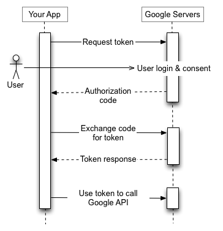
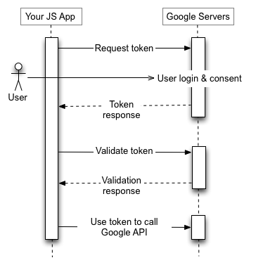
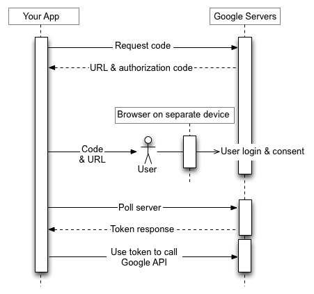
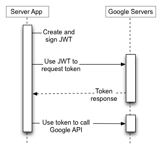

Page Summary
-
Google APIs use the OAuth 2.0 protocol for authentication and authorization, supporting various application scenarios.
-
The basic steps for accessing a Google API using OAuth 2.0 involve obtaining credentials, getting an access token from the Google Authorization Server, examining granted scopes, sending the access token to the API, and refreshing the token if needed.
-
Different application types, such as web server, installed, client-side, limited-input device, and service accounts, have specific authorization flows.
-
Refresh tokens can expire for various reasons, including user actions or policy settings.
-
Client libraries are available to simplify the implementation of OAuth 2.0 with Google APIs.
Google APIs use the OAuth 2.0 protocol for authentication and authorization. Google supports common OAuth 2.0 scenarios such as those for web server, client-side, installed, and limited-input device applications.
To begin, obtain OAuth 2.0 client credentials from the Google API Console. Then your client application requests an access token from the Google Authorization Server, extracts a token from the response, and sends the token to the Google API that you want to access. For an interactive demonstration of using OAuth 2.0 with Google (including the option to use your own client credentials), experiment with the OAuth 2.0 Playground.
This page gives an overview of the OAuth 2.0 authorization scenarios that Google supports, and provides links to more detailed content. For details about using OAuth 2.0 for authentication, see OpenID Connect.
Basic steps
All applications follow a basic pattern when accessing a Google API using OAuth 2.0. At a high level, you follow five steps:
1. Obtain OAuth 2.0 credentials from the Google API Console.
Visit the Google API Console to obtain OAuth 2.0 credentials such as a client ID and client secret that are known to both Google and your application. The set of values varies based on what type of application you are building. For example, a JavaScript application does not require a secret, but a web server application does.
You must create an OAuth client appropriate for the platform on which your app will run, for example:
2. Obtain an access token from the Google Authorization Server.
Before your application can access private data using a Google API, it must obtain an
access token that grants access to that API. A single access token can grant varying degrees
of access to multiple APIs. A variable parameter called scope controls the set
of resources and operations that an access token permits. During the access-token request,
your application sends one or more values in the scope parameter.
There are several ways to make this request, and they vary based on the type of application you are building. For example, a JavaScript application might request an access token using a browser redirect to Google, while an application installed on a device that has no browser uses web service requests. For more information on how to make the request, see Scenarios and the detailed implementation guides for each app type.
Some requests require an authentication step where the user logs in with their Google account. After logging in, the user is asked whether they are willing to grant one or more permissions that your application is requesting. This process is called user consent.
If the user grants at least one permission, the Google Authorization Server sends your application an access token (or an authorization code that your application can use to obtain an access token) and a list of scopes of access granted by that token. If the user does not grant the permission, the server returns an error.
It is generally a best practice to request scopes incrementally, at the time access is required, rather than up front. For example, an app that wants to support saving an event to a calendar should not request Google Calendar access until the user presses the "Add to Calendar" button; see Incremental authorization.
3. Examine scopes of access granted by the user.
Compare the scopes included in the access token response to the scopes required to access features and functionality of your application dependent upon access to a related Google API. Disable any features of your app unable to function without access to the related API.
The scope included in your request may not match the scope included in your response, even
if the user granted all requested scopes. Refer to the documentation for each Google API for
the scopes required for access. An API may map multiple scope string values to a single
scope of access, returning the same scope string for all values allowed in the request.
Example: the Google People API may return a scope of
https://www.googleapis.com/auth/contacts when an app requested a user authorize
a scope of https://www.google.com/m8/feeds/; the Google People API method
people.updateContact
requires a granted scope of https://www.googleapis.com/auth/contacts.
4. Send the access token to an API.
After an application obtains an access token, it sends the token to a Google API in an HTTP Authorization request header. It is possible to send tokens as URI query-string parameters, but we don't recommend it, because URI parameters can end up in log files that are not completely secure. Also, it is good REST practice to avoid creating unnecessary URI parameter names.
Access tokens are valid only for the set of operations and resources described in the
scope of the token request. For example, if an access token is issued for the
Google Calendar API, it does not grant access to the Google Contacts API. You can, however,
send that access token to the Google Calendar API multiple times for similar operations.
5. Refresh the access token, if necessary.
Access tokens have limited lifetimes. If your application needs access to a Google API beyond the lifetime of a single access token, it can obtain a refresh token. A refresh token allows your application to obtain new access tokens.
Scenarios
These scenarios describe how to use OAuth 2.0 to request authorization codes and obtain access and refresh tokens for different types of applications.
Web server applications
The Google OAuth 2.0 endpoint supports web server applications that use languages and frameworks such as PHP, Java, Go, Python, Ruby, and ASP.NET.
The authorization sequence begins when your application redirects a browser to a Google URL; the URL includes query parameters that indicate the type of access being requested. Google handles the user authentication, session selection, and user consent. The result is an authorization code, which the application can exchange for an access token and a refresh token.
The application should store the refresh token for future use and use the access token to access a Google API. Once the access token expires, the application uses the refresh token to obtain a new one.

For details, see Using OAuth 2.0 for Web Server Applications.
Installed applications
The Google OAuth 2.0 endpoint supports applications that are installed on devices such as computers, mobile devices, and tablets. When you create a client ID through the Google API Console, specify that this is an Installed application, then select Android, Chrome Extension, iOS, or Desktop app as the application type.
The process results in a client ID and, in some cases, a client secret, which you embed in the source code of your application. (In this context, the client secret is obviously not treated as a secret.)
The authorization sequence begins when your application redirects a browser to a Google URL; the URL includes query parameters that indicate the type of access being requested. Google handles the user authentication, session selection, and user consent. The result is an authorization code, which the application can exchange for an access token. The application should validate the access token before including it in a Google API request. When the token expires, the application repeats the process.
Optionally, a backend server can exchange the authorization code for a refresh token, storing it in a secure location. Once the access token expires, the backend server uses the refresh token to obtain a new one for the application.
For details, see Authorize access to Google user data for Android, and OAuth 2.0 for iOS & Desktop Apps.
Client-side (JavaScript) applications
The Google OAuth 2.0 endpoint supports JavaScript applications that run in a browser.
The authorization sequence begins when your application redirects a browser to a Google URL; the URL includes query parameters that indicate the type of access being requested. Google handles the user authentication, session selection, and user consent.
The result is an access token, which the client should validate before including it in a Google API request. When the token expires, the application repeats the process.

For details, see Using OAuth 2.0 for Client-side Applications.
Applications on limited-input devices
The Google OAuth 2.0 endpoint supports applications that run on limited-input devices such as game consoles, video cameras, and printers.
The authorization sequence begins with the application making a web service request to a Google URL for an authorization code. The response contains several parameters, including a URL and a code that the application shows to the user.
The user obtains the URL and code from the device, then switches to a separate device or computer with richer input capabilities. The user launches a browser, navigates to the specified URL, logs in, and enters the code.
Meanwhile, the application polls a Google URL at a specified interval. After the user approves access, the response from the Google server contains an access token and refresh token. The application should store the refresh token for future use and use the access token to access a Google API. Once the access token expires, the application uses the refresh token to obtain a new one.

For details, see Using OAuth 2.0 for Devices.
Service accounts
Google APIs such as the Prediction API and Google Cloud Storage can act on behalf of your application without accessing user information. In these situations your application needs to prove its own identity to the API, but no user consent is necessary. Similarly, in enterprise scenarios, your application can request delegated access to some resources.
For these types of server-to-server interactions you need a service account, which is an account that belongs to your application instead of to an individual end-user. Your application calls Google APIs on behalf of the service account, and user consent is not required. (In non-service-account scenarios, your application calls Google APIs on behalf of end-users, and user consent is sometimes required.)
A service account's credentials, which you obtain from the Google API Console, include a generated email address that is unique, a client ID, and at least one public/private key pair. You use the client ID and one private key to create a signed JWT and construct an access-token request in the appropriate format. Your application then sends the token request to the Google OAuth 2.0 Authorization Server, which returns an access token. The application uses the token to access a Google API. When the token expires, the application repeats the process.

For details, see the service-account documentation.
Token size
Tokens can vary in size, up to the following limits:
Access tokens returned by Google Cloud's Security Token Service API are structured similarly to Google API OAuth 2.0 access tokens but have different token size limits. For details, see the API documentation.
Google reserves the right to change token size within these limits, and your application must support variable token sizes accordingly.
Refresh token expiration
You must write your code to anticipate the possibility that a granted refresh token might no longer work. A refresh token might stop working for one of these reasons:
A Google Cloud Platform project with an OAuth consent screen configured for an external
user type and a publishing status of "Testing" is issued a refresh token expiring in
7 days, unless the only OAuth scopes requested are a subset of name, email address, and
user profile (through the
userinfo.email, userinfo.profile, openid scopes, or their
OpenID Connect equivalents).
There is currently a limit of 100 refresh tokens per Google Account per OAuth 2.0 client ID. If the limit is reached, creating a new refresh token automatically invalidates the oldest refresh token without warning. This limit does not apply to service accounts.
There is also a larger limit on the total number of refresh tokens a user account or service account can have across all clients. Most normal users won't exceed this limit but a developer's account used to test an implementation might.
If you need to authorize multiple programs, machines, or devices, one workaround is to limit the number of clients that you authorize per Google Account to 15 or 20. If you are a Google Workspace admin, you can create additional users with administrative privileges and use them to authorize some of the clients.
Dealing with session control policies for Google Cloud Platform (GCP) organizations
Administrators of GCP organizations might require frequent reauthentication of users while
they access GCP resources, using the
Google Cloud session control
feature. This policy impacts access to Google Cloud Console, the
Google Cloud SDK (also known as the gcloud
CLI), and any third party OAuth application that requires the Cloud Platform scope. If a
user has a session control policy in place then on the expiry of the session duration, your
API calls will error out similar to what would happen if the refresh token was revoked - the
call will fail with an error type invalid_grant; the error_subtype
field can be used to distinguish between a revoked token and a failure due to a session
control policy (for example, "error_subtype": "invalid_rapt"). As session
durations can be very limited (between 1 hour to 24 hours), this scenario must be handled
gracefully by restarting an auth session.
Equally, you must not use, or encourage the use of, user credentials for server-to-server deployment. If user credentials are deployed on a server for long running jobs or operations and a customer applies session control policies on such users, the server application will fail as there will be no way to re-authenticate the user when the session duration expires.
For more information on how to help your customers deploy this feature, refer to this admin-focused help article.
Client libraries
The following client libraries integrate with popular frameworks, which makes implementing OAuth 2.0 simpler. More features will be added to the libraries over time.
- Google Auth Library for Java
- Google API Client Library for Python
- Google API Client Library for Dart
- Google API Client Library for Go
- Google API Client Library for .NET
- Google API Client Library for Ruby
- Google API Client Library for PHP
- Google API Client Library for JavaScript
- GTMAppAuth - OAuth Client Library for Mac and iOS